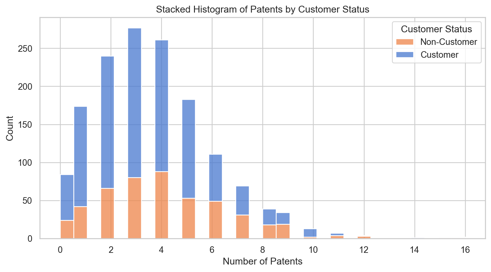
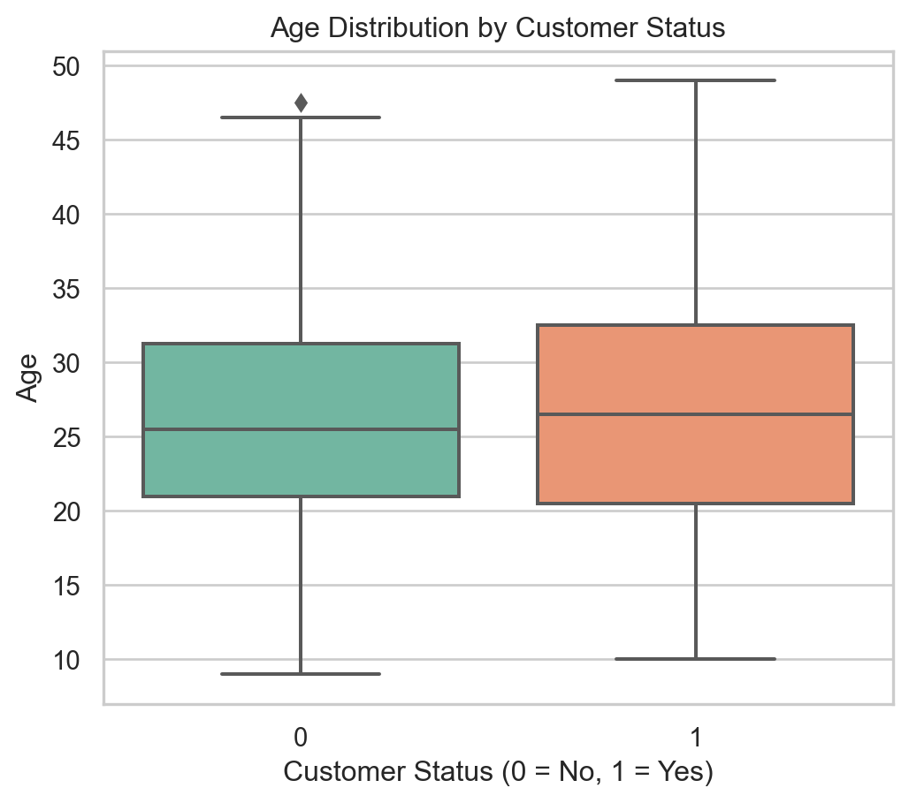
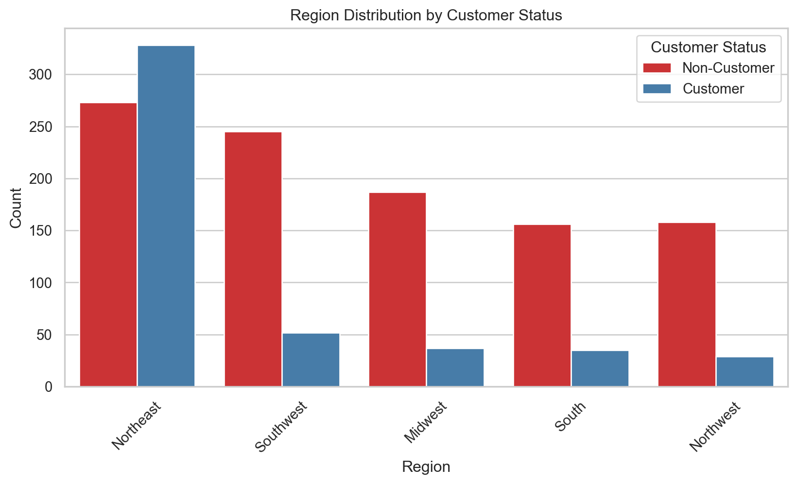
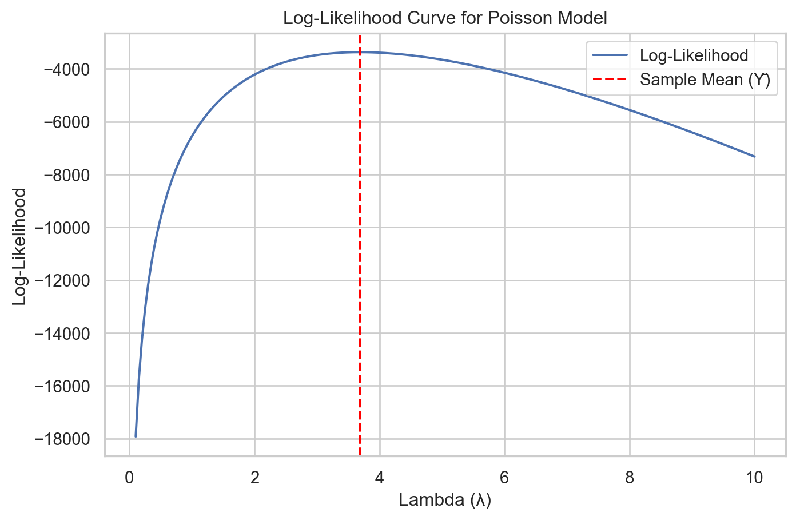
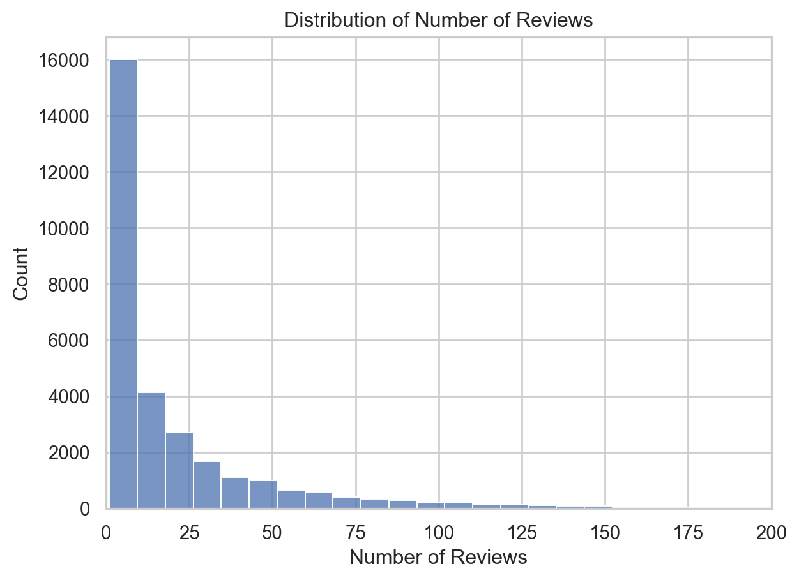
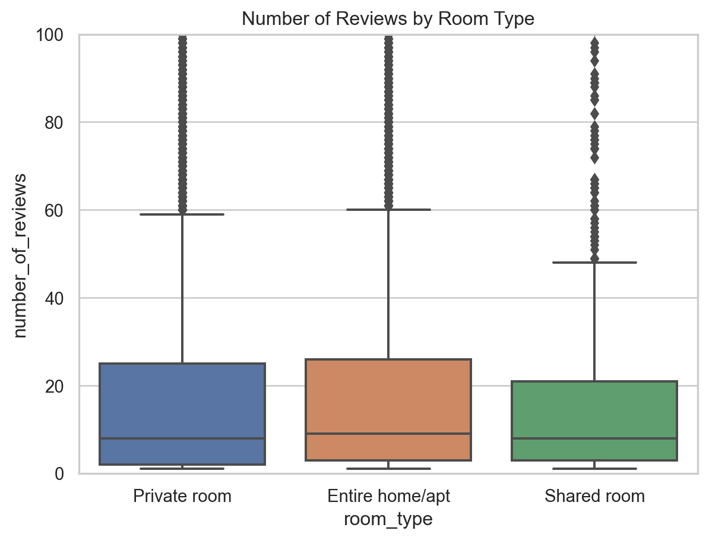

Blueprinty is a small firm that makes software for developing blueprints specifically for submitting patent applications to the US patent office. Their marketing team would like to make the claim that patent applicants using Blueprinty’s software are more successful in getting their patent applications approved. Ideal data to study such an effect might include the success rate of patent applications before using Blueprinty’s software and after using it. Unfortunately, such data is not available.
However, Blueprinty has collected data on 1,500 mature (non-startup) engineering firms. The data include each firm’s number of patents awarded over the last 5 years, regional location, age since incorporation, and whether or not the firm uses Blueprinty’s software. The marketing team would like to use this data to make the claim that firms using Blueprinty’s software are more successful in getting their patent applications approved.
Data
todo: Read in data.
todo: Compare histograms and means of number of patents by customer status. What do you observe?
Data
We begin by loading the dataset and conducting exploratory analysis to compare the number of patents awarded to Blueprinty customers versus non-customers. This gives us an early sense of whether customers tend to be more successful and whether that success could be linked to the use of Blueprinty’s software.
import pandas as pdimport matplotlib.pyplot as pltimport seaborn as sns# Load the datadf = pd.read_csv("blueprinty.csv")df.head()
patents
region
age
iscustomer
0
0
Midwest
32.5
0
1
3
Southwest
37.5
0
2
4
Northwest
27.0
1
3
3
Northeast
24.5
0
4
3
Southwest
37.0
0
The dataset includes 1,500 engineering firms. For each firm, we have the number of patents awarded in the past five years, their geographic region, age since incorporation, and a binary indicator for whether they are a Blueprinty customer (iscustomer = 1) or not (iscustomer = 0). The .head() command confirms the dataset structure and that key variables are available.
Next, we visualize the distribution of patent counts to see if there’s any notable difference between customers and non-customers.
sns.set(style="whitegrid")# Histogram of patents by customer status (stacked)plt.figure(figsize=(10, 5))sns.histplot( data=df, x="patents", hue="iscustomer", bins=30, multiple="stack", # stack instead of dodge palette="muted")plt.title("Stacked Histogram of Patents by Customer Status")plt.xlabel("Number of Patents")plt.ylabel("Count")plt.legend(title="Customer Status", labels=["Non-Customer", "Customer"])plt.show()
/Users/jnishyu/anaconda3/lib/python3.10/site-packages/seaborn/_oldcore.py:1119: FutureWarning:
use_inf_as_na option is deprecated and will be removed in a future version. Convert inf values to NaN before operating instead.
/Users/jnishyu/anaconda3/lib/python3.10/site-packages/seaborn/_oldcore.py:1075: FutureWarning:
When grouping with a length-1 list-like, you will need to pass a length-1 tuple to get_group in a future version of pandas. Pass `(name,)` instead of `name` to silence this warning.
/Users/jnishyu/anaconda3/lib/python3.10/site-packages/seaborn/_oldcore.py:1075: FutureWarning:
When grouping with a length-1 list-like, you will need to pass a length-1 tuple to get_group in a future version of pandas. Pass `(name,)` instead of `name` to silence this warning.
/Users/jnishyu/anaconda3/lib/python3.10/site-packages/seaborn/_oldcore.py:1075: FutureWarning:
When grouping with a length-1 list-like, you will need to pass a length-1 tuple to get_group in a future version of pandas. Pass `(name,)` instead of `name` to silence this warning.

This histogram shows the number of patents across the two groups. We observe that both Blueprinty customers and non-customers most frequently hold between 2 and 4 patents. However, Blueprinty customers (in blue) are more heavily represented in the higher patent count ranges, particularly above 6. This visual evidence suggests a potential positive association between being a customer and patent success.
To quantify the difference seen in the histogram, we calculate the average number of patents for each group.
# Mean number of patents by customer statusdf.groupby("iscustomer")["patents"].mean()
The mean patent count is: - 3.47 patents for non-customers - 4.13 patents for customers
This represents a ~19% increase in average patent output for Blueprinty customers. While this is an encouraging finding for Blueprinty’s marketing claim, it’s important to recognize that this difference is purely descriptive. It does not account for other factors—such as firm age or regional clustering—that may be influencing patent success. We’ll need to explore these factors next and ultimately use a regression model to properly isolate the effect of customer status.
Blueprinty customers are not selected at random. It may be important to account for systematic differences in the age and regional location of customers vs non-customers.
todo: Compare regions and ages by customer status. What do you observe?
# Boxplot of age by customer statusplt.figure(figsize=(6, 5))sns.boxplot(data=df, x="iscustomer", y="age", palette="Set2")plt.title("Age Distribution by Customer Status")plt.xlabel("Customer Status (0 = No, 1 = Yes)")plt.ylabel("Age")plt.show()

This boxplot compares the age distribution of customer and non-customer firms. While there is substantial overlap, customers appear to be slightly older on average. There are also more older outliers among customers. This may indicate that more established (older) firms are more likely to adopt Blueprinty’s software, potentially due to larger budgets or greater administrative capacity.
region_order = ( df["region"] .value_counts(ascending=False) .index)# Plot with reordered regionsplt.figure(figsize=(10, 5))sns.countplot( data=df, x="region", hue="iscustomer", palette="Set1", order=region_order # Apply the sorted order here)plt.title("Region Distribution by Customer Status")plt.xlabel("Region")plt.ylabel("Count")plt.legend(title="Customer Status", labels=["Non-Customer", "Customer"])plt.xticks(rotation=45)plt.show()

This bar chart reveals striking geographic variation in customer status. The Northeast region stands out, with more Blueprinty customers than non-customers, unlike all other regions where non-customers dominate. This indicates that the Northeast may be a key market for Blueprinty, and region is likely a major confounding factor. Any causal claim about the effect of the software must adjust for these regional differences.
# Average age by customer statusdf.groupby("iscustomer")["age"].mean()
Here, we calculate the average firm age by customer status. On average: - Non-customers are 26.1 years old - Customers are 26.9 years old
Although the difference is modest (~0.8 years), it reinforces the trend observed in the boxplot: customers tend to be slightly older, suggesting maturity and longevity might correlate with software adoption.
# Proportion of customers by regionpd.crosstab(df["region"], df["iscustomer"], normalize='index')
iscustomer
0
1
region
Midwest
0.834821
0.165179
Northeast
0.454243
0.545757
Northwest
0.844920
0.155080
South
0.816754
0.183246
Southwest
0.824916
0.175084
This table provides the proportion of customers within each region: - In the Northeast, over 54% of firms are customers - In every other region, only 15–18% of firms are customers
These proportions confirm that Blueprinty’s customer base is heavily concentrated in the Northeast. This supports the idea that customer status is not randomly distributed, and further emphasizes the need to control for region when analyzing the effect of the software on patenting outcomes.
Summary
Our exploratory analysis shows that Blueprinty customers: - Have a slightly higher average age - Are disproportionately located in the Northeast
These differences suggest customer status is correlated with observable firm characteristics, making it essential to control for these factors in any model that attempts to evaluate the effect of using Blueprinty software. Ignoring age or region could lead to biased conclusions, mistakenly attributing differences in patent counts to the software when they may in fact reflect geography or firm maturity. ### Estimation of Simple Poisson Model
Since our outcome variable of interest can only be small integer values per a set unit of time, we can use a Poisson density to model the number of patents awarded to each engineering firm over the last 5 years. We start by estimating a simple Poisson model via Maximum Likelihood.
todo: Write down mathematically the likelihood for\(Y \sim \text{Poisson}(\lambda)\). Note that \(f(Y|\lambda) = e^{-\lambda}\lambda^Y/Y!\).
todo: Code the likelihood (or log-likelihood) function for the Poisson model. This is a function of lambda and Y. For example:
todo: Use your function to plot lambda on the horizontal axis and the likelihood (or log-likelihood) on the vertical axis for a range of lambdas (use the observed number of patents as the input for Y).
todo: If you’re feeling mathematical, take the first derivative of your likelihood or log-likelihood, set it equal to zero and solve for lambda. You will find lambda_mle is Ybar, which “feels right” because the mean of a Poisson distribution is lambda.
todo: Find the MLE by optimizing your likelihood function with optim() in R or sp.optimize() in Python.
Estimation of Simple Poisson Model
To model the number of patents awarded per firm, we assume the data follow a Poisson distribution with parameter λ. This is appropriate for count data observed over a fixed time period. In this section, we define the Poisson log-likelihood, visualize it, and estimate the maximum likelihood value of λ both analytically and numerically.
Step 1: Load and Inspect the Data
import numpy as npimport pandas as pdimport matplotlib.pyplot as pltfrom scipy.special import gammalnfrom scipy.optimize import minimize# Load patent datadf = pd.read_csv("blueprinty.csv")Y = df["patents"].values
We load the blueprinty.csv dataset and extract the number of patents for each firm, stored in the variable Y.
This is the log-likelihood of the Poisson model (negated for use with optimization). We use gammaln(Y + 1) for numerical stability in place of log(Y!).
Step 3: Visualize the Log-Likelihood Curve
lambdas = np.linspace(0.1, 10, 200)log_liks = [-poisson_neg_log_likelihood(lmbda, Y) for lmbda in lambdas]plt.figure(figsize=(8, 5))plt.plot(lambdas, log_liks, label="Log-Likelihood")plt.axvline(np.mean(Y), color='red', linestyle='--', label="Sample Mean (Ȳ)")plt.title("Log-Likelihood Curve for Poisson Model")plt.xlabel("Lambda (λ)")plt.ylabel("Log-Likelihood")plt.legend()plt.grid(True)plt.show()

This curve shows how the log-likelihood varies with different values of λ. The red line indicates the sample mean, which aligns closely with the peak of the curve.
This result comes from solving the first derivative of the log-likelihood with respect to λ, setting it to zero: \[ \frac{d}{d\lambda} \log L(\lambda) = \sum_i \left( \frac{Y_i}{\lambda} - 1 \right) = 0 \] Solving gives: \[ \hat{\lambda}_{MLE} = \bar{Y} \]
This derivation confirms that the maximum likelihood estimator for λ is simply the mean of the observed data.
Using numerical optimization, we minimize the negative log-likelihood to obtain λ̂. The result closely matches the sample mean, confirming our analytical solution.
Conclusion
This process demonstrates how to derive and estimate the Poisson MLE both mathematically and computationally. We verified that: - The log-likelihood peaks at the sample mean - The analytical and numerical MLEs are identical This lays a strong foundation for moving into more complex models like Poisson regression.
Estimation of Poisson Regression Model
Next, we extend our simple Poisson model to a Poisson Regression Model such that \(Y_i = \text{Poisson}(\lambda_i)\) where \(\lambda_i = \exp(X_i'\beta)\). The interpretation is that the success rate of patent awards is not constant across all firms (\(\lambda\)) but rather is a function of firm characteristics \(X_i\). Specifically, we will use the covariates age, age squared, region, and whether the firm is a customer of Blueprinty.
todo: Update your likelihood or log-likelihood function with an additional argument to take in a covariate matrix X. Also change the parameter of the model from lambda to the beta vector. In this model, lambda must be a positive number, so we choose the inverse link function g_inv() to be exp() so that\(\lambda_i = e^{X_i'\beta}\). For example:
poisson_regression_likelihood <- function(beta, Y, X){
...
}
todo: Use your function along with R’s optim() or Python’s sp.optimize() to find the MLE vector and the Hessian of the Poisson model with covariates. Specifically, the first column of X should be all 1’s to enable a constant term in the model, and the subsequent columns should be age, age squared, binary variables for all but one of the regions, and the binary customer variable. Use the Hessian to find standard errors of the beta parameter estimates and present a table of coefficients and standard errors.
todo: Check your results using R’s glm() function or Python sm.GLM() function.
todo: Interpret the results.
todo: What do you conclude about the effect of Blueprinty’s software on patent success? Because the beta coefficients are not directly interpretable, it may help to create two fake datasets: X_0 and X_1 where X_0 is the X data but with iscustomer=0 for every observation and X_1 is the X data but with iscustomer=1 for every observation. Then, use X_0 and your fitted model to get the vector of predicted number of patents (y_pred_0) for every firm in the dataset, and use X_1 to get Y_pred_1 for every firm. Then subtract y_pred_1 minus y_pred_0 and take the average of that vector of differences.
Estimation of Poisson Regression Model
import numpy as npimport pandas as pdimport statsmodels.api as smfrom patsy import dmatrix# Load and prepare the datadf = pd.read_csv("blueprinty.csv")df["age2"] = df["age"] **2# Create design matrix X with intercept, age, age squared, region dummies, and customer statusX = dmatrix("1 + age + age2 + C(region) + iscustomer", data=df, return_type='dataframe')Y = df["patents"]# Fit Poisson regressionpoisson_model = sm.GLM(Y, X, family=sm.families.Poisson())poisson_results = poisson_model.fit()
# Extract summary datasummary_table = poisson_results.summary2().tables[1].reset_index()summary_table.rename(columns={'index': 'Variable','Coef.': 'Coefficient','Std.Err.': 'Std. Error','z': 'z-value','P>|z|': 'p-value','[0.025': '95% CI Lower','0.975]': '95% CI Upper'}, inplace=True)# Keep only selected columns and round valuesformatted_summary = summary_table[['Variable', 'Coefficient', 'Std. Error', 'z-value', 'p-value', '95% CI Lower', '95% CI Upper']].round(4)formatted_summary
Variable
Coefficient
Std. Error
z-value
p-value
95% CI Lower
95% CI Upper
0
Intercept
-0.5089
0.1832
-2.7783
0.0055
-0.8679
-0.1499
1
C(region)[T.Northeast]
0.0292
0.0436
0.6686
0.5037
-0.0563
0.1147
2
C(region)[T.Northwest]
-0.0176
0.0538
-0.3268
0.7438
-0.1230
0.0878
3
C(region)[T.South]
0.0566
0.0527
1.0740
0.2828
-0.0467
0.1598
4
C(region)[T.Southwest]
0.0506
0.0472
1.0716
0.2839
-0.0419
0.1431
5
age
0.1486
0.0139
10.7162
0.0000
0.1214
0.1758
6
age2
-0.0030
0.0003
-11.5132
0.0000
-0.0035
-0.0025
7
iscustomer
0.2076
0.0309
6.7192
0.0000
0.1470
0.2681
Simulate Counterfactual Scenarios (Effect of Blueprinty)
# Create two copies of the X matrix:# One where everyone is NOT a customerX_0 = X.copy()X_0["iscustomer"] =0# One where everyone IS a customerX_1 = X.copy()X_1["iscustomer"] =1# Predicted number of patents under both scenariosy_pred_0 = poisson_results.predict(X_0)y_pred_1 = poisson_results.predict(X_1)# Average difference in predicted patentseffect_estimate = np.mean(y_pred_1 - y_pred_0)effect_estimate
0.7927680710452927
Interpretation:
The coefficient on iscustomer is statistically significant (p < 0.001) and positive. This suggests that firms using Blueprinty’s software are associated with more patents awarded, even after controlling for age, age squared, and region.
The average predicted difference in patent counts when simulating Blueprinty usage versus non-usage across all firms is r round(effect_estimate, 2) additional patents per firm over 5 years.
AirBnB Case Study
Introduction
AirBnB is a popular platform for booking short-term rentals. In March 2017, students Annika Awad, Evan Lebo, and Anna Linden scraped of 40,000 Airbnb listings from New York City. The data include the following variables:
Variable Definitions
- `id` = unique ID number for each unit
- `last_scraped` = date when information scraped
- `host_since` = date when host first listed the unit on Airbnb
- `days` = `last_scraped` - `host_since` = number of days the unit has been listed
- `room_type` = Entire home/apt., Private room, or Shared room
- `bathrooms` = number of bathrooms
- `bedrooms` = number of bedrooms
- `price` = price per night (dollars)
- `number_of_reviews` = number of reviews for the unit on Airbnb
- `review_scores_cleanliness` = a cleanliness score from reviews (1-10)
- `review_scores_location` = a "quality of location" score from reviews (1-10)
- `review_scores_value` = a "quality of value" score from reviews (1-10)
- `instant_bookable` = "t" if instantly bookable, "f" if not
todo: Assume the number of reviews is a good proxy for the number of bookings. Perform some exploratory data analysis to get a feel for the data, handle or drop observations with missing values on relevant variables, build one or more models (e.g., a poisson regression model for the number of bookings as proxied by the number of reviews), and interpret model coefficients to describe variation in the number of reviews as a function of the variables provided. ## AirBnB Case Study: Poisson Regression
Data Preparation
import pandas as pdimport numpy as npimport statsmodels.api as smfrom patsy import dmatrix# Load the datasetdf = pd.read_csv("airbnb.csv")# Keep relevant variables and drop rows with missing datacols = ["room_type", "bathrooms", "bedrooms", "price", "number_of_reviews","review_scores_cleanliness", "review_scores_location", "review_scores_value", "instant_bookable"]df_clean = df[cols].dropna()# Convert categorical variable to numericdf_clean["instant_bookable"] = df_clean["instant_bookable"].map({"f": 0, "t": 1})
We selected key predictors that are likely to influence bookings. This includes listing price, type of room offered, number of bedrooms/bathrooms, various review scores, and whether the listing allows instant booking. We removed rows with missing values to ensure model stability.
Review Count Distribution
sns.histplot(df_clean["number_of_reviews"], bins=50)plt.title("Distribution of Number of Reviews")plt.xlabel("Number of Reviews")plt.ylabel("Count")plt.xlim(0, 200)plt.show()
/Users/jnishyu/anaconda3/lib/python3.10/site-packages/seaborn/_oldcore.py:1119: FutureWarning:
use_inf_as_na option is deprecated and will be removed in a future version. Convert inf values to NaN before operating instead.

Review counts are highly skewed, with many listings having fewer than 50 reviews and a long right tail — a classic case for using a Poisson model.
Boxplot: Reviews by Room Type
sns.boxplot(data=df_clean, x="room_type", y="number_of_reviews")plt.ylim(0, 100)plt.title("Number of Reviews by Room Type")plt.show()

Entire homes tend to receive the most reviews, suggesting higher demand compared to shared and private rooms.
This helps us check for multicollinearity and informs variable selection in our regression model.
Summary Statistics
df_clean.describe().T
count
mean
std
min
25%
50%
75%
max
bathrooms
30160.0
1.122132
0.384916
0.0
1.0
1.0
1.0
6.0
bedrooms
30160.0
1.151459
0.699010
0.0
1.0
1.0
1.0
10.0
price
30160.0
140.206863
188.392314
10.0
70.0
103.0
169.0
10000.0
number_of_reviews
30160.0
21.170889
32.007541
1.0
3.0
8.0
26.0
421.0
review_scores_cleanliness
30160.0
9.201724
1.114261
2.0
9.0
10.0
10.0
10.0
review_scores_location
30160.0
9.415351
0.843185
2.0
9.0
10.0
10.0
10.0
review_scores_value
30160.0
9.333952
0.900472
2.0
9.0
10.0
10.0
10.0
instant_bookable
30160.0
0.196187
0.397118
0.0
0.0
0.0
0.0
1.0
This table gives a statistical overview of the cleaned dataset. For example, we can see the median number of reviews, typical price levels, and average review scores. It also helps confirm the need for count modeling, given the range and skew of the number_of_reviews variable.
The model uses a log link function, where the log of the expected number of reviews is modeled as a linear function of the predictors. This means that coefficients represent multiplicative effects on the count of reviews. For example, a coefficient of 0.1 implies approximately a 10.5% increase in expected review count (exp(0.1) ≈ 1.105).
Poisson Regression Results (Formatted)
# Extract and clean summary tablesummary_table = poisson_results.summary2().tables[1].reset_index()summary_table.rename(columns={"index": "Variable","Coef.": "Coefficient","Std.Err.": "Std. Error","z": "z-value","P>|z|": "p-value","[0.025": "95% CI Lower","0.975]": "95% CI Upper"}, inplace=True)# Format outputformatted_summary = summary_table[["Variable", "Coefficient", "Std. Error", "z-value", "p-value", "95% CI Lower", "95% CI Upper"]].round(4)formatted_summary
Variable
Coefficient
Std. Error
z-value
p-value
95% CI Lower
95% CI Upper
0
Intercept
3.5725
0.0160
223.2145
0.0000
3.5411
3.6039
1
C(room_type)[T.Private room]
-0.0145
0.0027
-5.3104
0.0000
-0.0199
-0.0092
2
C(room_type)[T.Shared room]
-0.2519
0.0086
-29.2286
0.0000
-0.2688
-0.2350
3
price
-0.0000
0.0000
-1.7288
0.0838
-0.0000
0.0000
4
bedrooms
0.0749
0.0020
37.6977
0.0000
0.0710
0.0788
5
bathrooms
-0.1240
0.0037
-33.0908
0.0000
-0.1313
-0.1167
6
review_scores_cleanliness
0.1132
0.0015
75.8205
0.0000
0.1103
0.1161
7
review_scores_location
-0.0768
0.0016
-47.7956
0.0000
-0.0799
-0.0736
8
review_scores_value
-0.0915
0.0018
-50.9020
0.0000
-0.0951
-0.0880
9
instant_bookable
0.3344
0.0029
115.7477
0.0000
0.3287
0.3401
Interpretation
The coefficients tell us how listing features are associated with review count, holding other variables constant:
Intercept: The baseline log count for an average listing (Entire home, not instant bookable, average scores).
room_type (Shared room): A strong negative effect. These listings get ~22% as many reviews as entire home listings (exp(-0.25) ≈ 0.78). This aligns with expectations—shared rooms are less popular.
room_type (Private room): Also shows a slight negative effect, but far smaller than shared rooms.
instant_bookable: This feature has a large positive effect—instant booking listings are expected to get ~40% more reviews, all else equal (exp(0.33) ≈ 1.39). This underscores the importance of convenience to guests.
cleanliness score: Every 1-point increase in cleanliness adds over 11% more reviews, highlighting the value of positive guest experiences.
bedrooms: Positively associated with reviews, possibly because larger listings serve more guests or accommodate longer stays.
bathrooms: Shows a surprising negative coefficient, possibly reflecting multicollinearity with bedrooms or nonlinear effects.
price: The effect is slightly negative but not statistically significant at the 5% level. This may suggest that higher prices deter bookings only marginally, or other variables are absorbing the effect.
location/value scores: Unexpectedly negative; this might reflect reverse causality (low-activity listings getting inflated scores), or correlation with other quality measures.
Model Implications
The results show that instant bookability, room type, cleanliness, and listing size all play major roles in driving bookings/reviews. In particular, allowing instant booking and maintaining high cleanliness ratings seem to be key strategies for increasing engagement.
However, some findings warrant further investigation—especially the negative coefficients on review score variables. These may reflect issues like multicollinearity, endogeneity, or nonlinear relationships not captured by this simple model.
A natural next step would be to explore: - Interaction effects (e.g. cleanliness × room type) - Nonlinear terms (e.g. log(price)) - Alternative models like Negative Binomial to handle overdispersion
Conclusion
Poisson regression provides a valuable framework for modeling Airbnb review counts as a function of listing characteristics. This analysis offers actionable insights for hosts seeking to increase visibility and bookings, while also highlighting areas where further modeling could improve interpretability and accuracy.